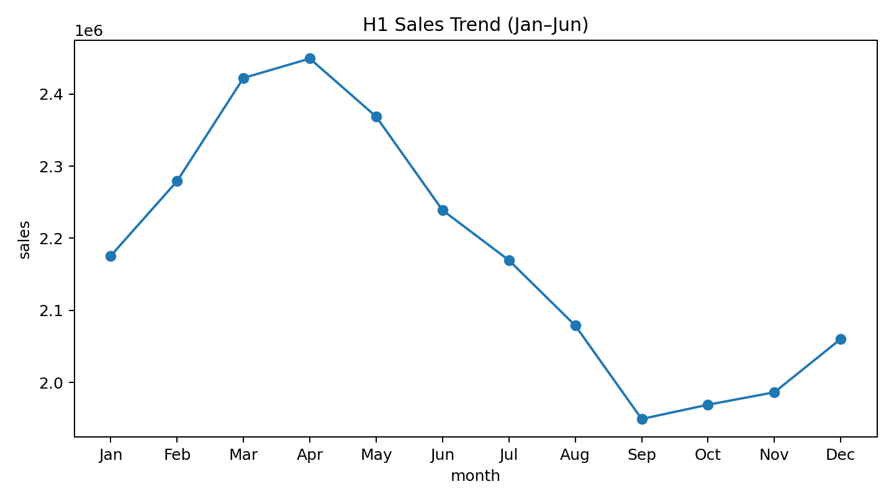
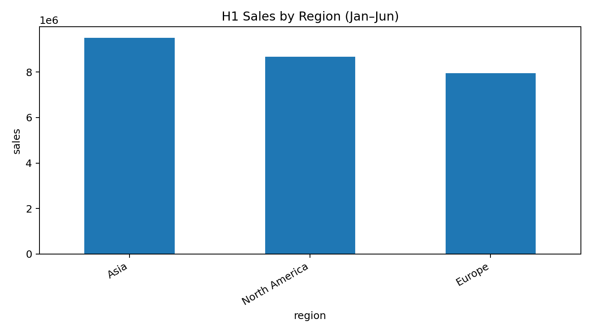
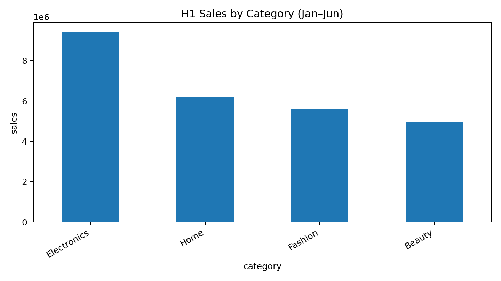
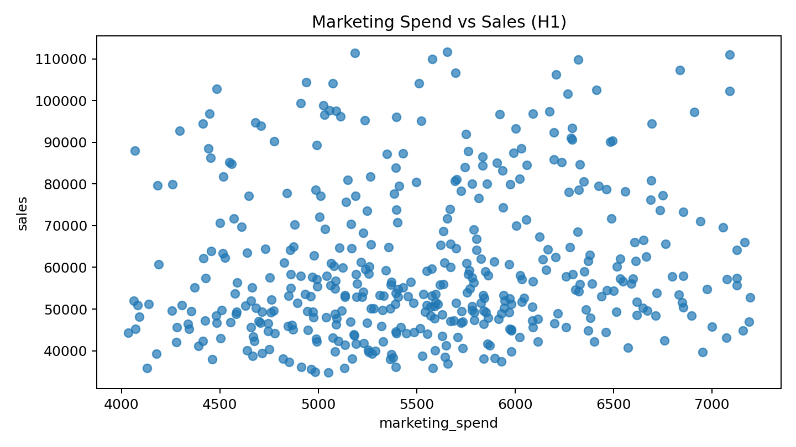

Generated deck preview
Purpose: Set the executive context on first-half momentum and where to focus next.

Purpose: Identify which regions drove H1 results and where intervention is needed.

Purpose: Pinpoint category winners/laggards to guide merchandising and inventory decisions.

Purpose: Assess spend-to-sales relationship and identify budget reallocation opportunities.

Purpose: Convert H1 insights into a focused action plan and asks for leadership.